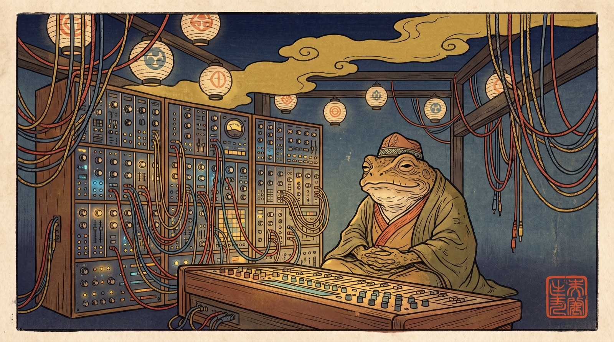

FOSTER'S OPEN SESSIONFollow
Synth temple · generated artworkFollow
the low end.
A little structure.
Room for a beautiful accident.
01 / THE GROOVEREADY WHEN YOU ARE
Tap a step to add or remove a hit. Four beats. Endless ways through.
Let the first drop ask.
Let the second answer.
Let the second answer.
Six bass characters, shuffled in pairs.
OSCILLATORS + DRUMS→MIX→COMPRESSOR→MASTER→YOUR EARS
Sound begins only when you play. Escape stops everything.
02 / SHAPE A VOICESame note.
Same note.
Different world.
Hear what one small decision does. These are browser sound sketches, inspired by synthesis techniques.
Go deeper with Learning Synths ↗A minor pentatonic · play the keys, or use A S D F G H J K.
LISTEN FOR THE DIFFERENCE
How brightness becomes warmth
A low-pass filter reduces the high frequencies. Keep the note and waveform the same; hear what changes.
03 / THE ROOMGive each machine
Give each machine
a musical job.
A working selection from the studio inventory. Choose a piece to discover a small experiment for the real thing.
04 / LEAVE A TRAILKeep the
Keep the
happy accidents.
Your groove, tempo and sound settings, saved in this browser. Export a patch to move it to another device.
A FIVE-MINUTE SESSION
- Give the kick four steady footsteps.
- Put hats in the spaces between.
- Remove one bass hit. Feel the room.
- Play a melody. Name the moment.